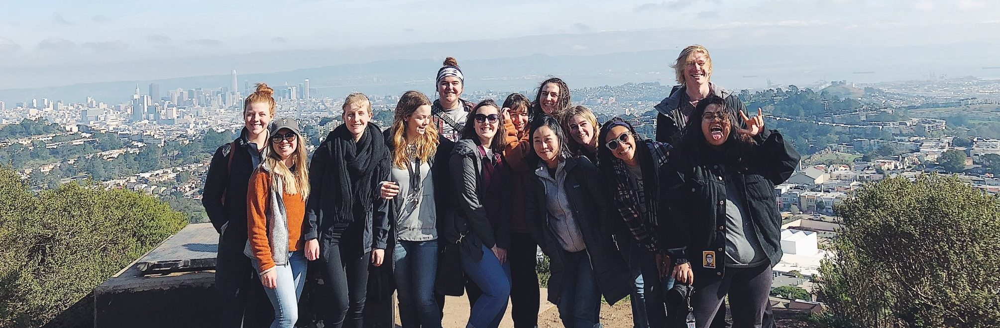
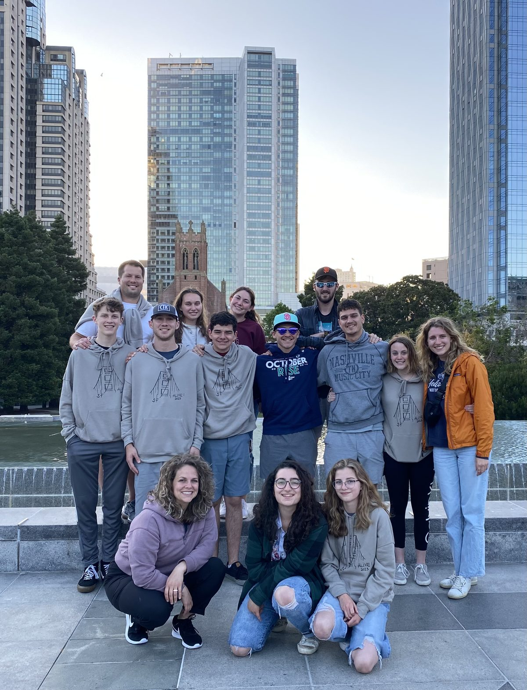
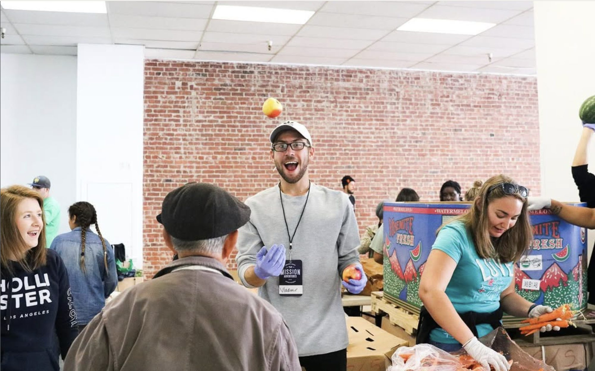
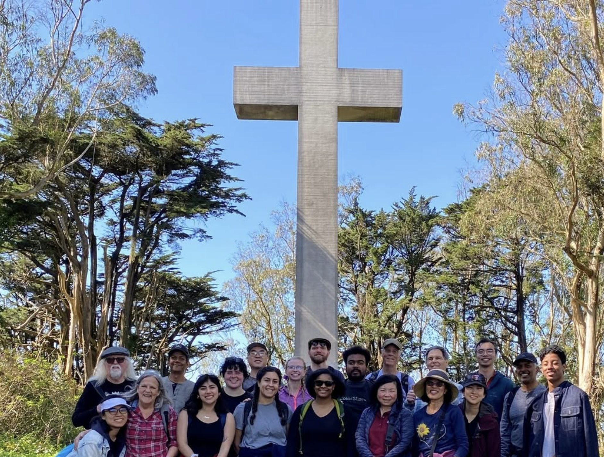

Step into mission. Step into transformation.
Short-term outreach in the heart of San Francisco: Mission Adventures for church and youth groups, and a city base for YWAM teams from other locations.
Who’s coming?
Mission Adventures
A weekend, a week or longer serving in the Tenderloin. We plan the ministry, meals and housing so your team can focus on loving God and loving people.
Plan a Mission Adventure ↓ YWAM schools & teamsYWAM teams from other locations
Bring your DTS or school to the city for a final lecture week, a local outreach, or a launch point before you head overseas.
Plan a YWAM team visit ↓Your team focuses on loving God and loving people.
Orientation
We prepare your team for the Tenderloin before you ever step onto the street.
Food planning
Meals planned and shared at our base, with YWAM staff around the table.
Housing
Stay at the YWAM San Francisco base, right in the heart of the city.
Ministry
Real opportunities to serve alongside local ministries every day.


Serve in the Tenderloin.
Feed the hungry, pray for and encourage neighbors on the street and in the Ellis Room. Share testimonies and the Gospel. Care for families, immigrants and unhoused neighbors.

Eat, worship and live together.
Your team stays at our base, shares meals and space with YWAM staff, and gathers for devotion and worship each day.
A weekend, a week, or longer.
$100 per participant per day, including food, accommodation and ministry supplies. Slide to estimate your team’s trip.
Estimate only. We’ll confirm details when you book.
Finish strong in the city, or launch from it.
YWAM San Francisco hosts schools and outreach teams from other YWAM locations. Spend time in a real urban neighborhood, alongside staff who have served these blocks for years.
- A final lecture week. Close your lecture phase with a week of teaching and ministry in the Tenderloin.
- A city outreach. Serve in the Ellis Room, the food pantry and on the street.
- A launch point overseas. Transition through San Francisco on your way to international outreach.
More than a trip.
All-inclusive
We take care of the details so leaders can focus on their students and the ministry at hand.
Discipleship focused
Every part of the trip helps participants grow in their relationship with Jesus.
Urban mission field
The Tenderloin is a unique place to learn how the Gospel changes lives in real time.
Flexible times
Come for a weekend, a week, or longer.
What your team will step into.


Gather your team. Pray. Say yes.
We’ll take care of the rest. Email outreach@ywamsanfrancisco.org or call 415-885-6543.